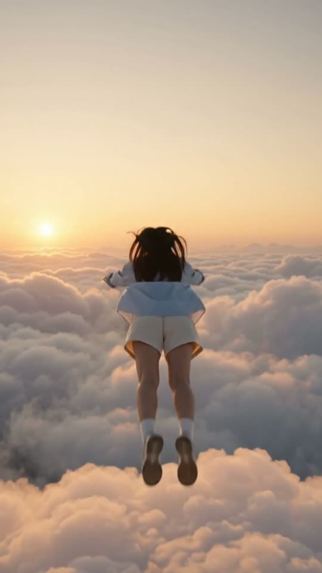
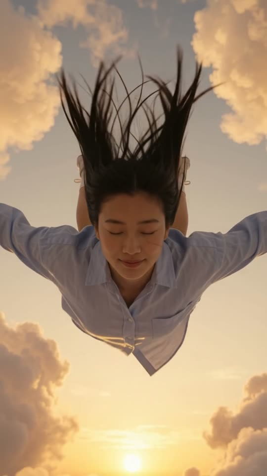

Free prompt pack
One cloud.One leap.
Nobody sat on a cloud at sunset and dove off it. One still image and one prompt that cuts five shots inside ten seconds.
Both prompts, in the order I ran them. Pull the ripcord on each one. Tap the sky for wind.
The first frame
Her, her clothes and the light. This image is shot one and the reference for all five: the woman sitting on the rim of a cloud, a valley of clouds below, the sun low between two cloud walls.
Watch out
The colour of the whole film comes from here. Make the sunset deep and golden in the image, or the video goes pale pastel.
The prompt 129 words
Cinematic film still at golden hour high above the clouds. A young East Asian woman with long straight dark hair sits on the very edge of a towering cliff of cloud, her legs stretched out on the soft cloud top, looking down into a deep canyon between two walls of glowing cumulus. She wears an oversized pale blue button-down shirt with the sleeves pushed up, cream linen shorts, white ankle socks and white sneakers; the wind lifts her hair. The cloud under her dents softly where she sits. The sun sits low on the horizon between the two cloud walls, lighting the cloud tops peach and gold and the shadowed sides lavender and dusky blue. Shot on 35mm film, real grain, natural skin texture, soft halation around the sun.
Five shots, one clip
Every cut written to the tenth of a second. Add the image as the reference, set 10 s, 9:16, 720p and audio on, and paste the prompt whole. The cuts land where the prompt puts them.
- 0–2.0 sa hop, then she sits on the rim
- 2.0–3.6 stiny on a wall of cloud
- 3.6–5.6 sprofile, one slow breath
- 5.6–7.6 sarms open, a head-first dive
- 7.6–10 sfrom below, hair streaming up
Watch out
Write it as a dive into a pool, not a fall. A fall off a cliff gets refused; a happy dream of flying makes her float up like a balloon.
Fragments


The prompt 1031 words
FORMAT A cinematic short film in five shots with hard cuts between them, vertical frame. Each shot is one continuous take; the cuts happen only at the times written below. The picture fills the frame edge to edge in every shot: no black border, no frame lines, no letterbox. The video runs at 24 fps. No frame is repeated. Real time, 1x speed, never slow motion. SCENE High above the clouds at golden hour, a young woman plays on a huge, soft cloud: she hops and sits on its rounded rim, gazes out at the low sun over a valley of clouds, then springs forward into a joyful dive, head first, like diving into a swimming pool, down toward a soft sea of clouds far below. The last shot looks up at her from below as she dives down toward the camera in a skydiver's pose, body flat, arms and legs spread wide, her hair streaming up behind her. EXACTLY ONE WOMAN. REFERENCE IMAGE Use it for the woman, her face, her hair, her clothes, the clouds and above all the light and colour: the deep golden sunset of the reference stays in every shot. She is the same person in every shot, in the same clothes, matching the reference exactly: zero drift, no smoothing. Each shot has its own framing, written below; do not copy the reference's framing except in shot 1. THE WOMAN A young East Asian woman with long straight dark hair that the wind lifts the whole time. She wears an oversized pale blue button-down shirt with a collar and the sleeves pushed up, cream linen shorts, white ankle socks and white sneakers. Her expression is serene and dreamy: lips closed or barely parted, a faint smile at most, calm eyes. She never grins, never laughs with her mouth open, never poses. THE CLOUDS Real cumulus clouds, huge and solid-looking enough to hold her: two towering banks of cloud face each other across a wide, deep valley of cloud, their tops soft like fresh snow, and a soft sea of clouds far below. Where she steps or sits, the cloud dents a little and a fine powder of cloud puffs up and drifts away in the wind. The clouds billow very slowly. They are never thin fog, never smoke, never cotton wool. SHOTS SHOT 1, 0–2.0 s — Medium shot from the side, low, at cloud-top level, the low orange sun behind her at frame-left. She hops lightly on the rounded rim of the cloud with one arm up for balance, lands softly and sits down on the rim, her legs stretched out on the cloud top toward the sun; a puff of cloud powder rises where she lands. SHOT 2, 2.0–3.6 s — Extreme wide shot looking along the valley of clouds: two towering banks of cloud, frame-left and frame-right, their sunlit tops glowing orange and their shadowed sides deep lavender-blue, the sun a glowing orange disc on the horizon between them; on top of the frame-left bank, she is a tiny seated figure. The camera pushes in slowly. SHOT 3, 3.6–5.6 s — Close-up of her face in profile, facing frame-right, against the glowing sky. She gazes out at the sun with calm, open eyes; the wind blows strands of hair across her face; she takes a slow breath. Her lips stay closed. SHOT 4, 5.6–7.6 s — From behind her and a little above, medium wide: she stands on the cloud rim facing the valley, spreads her arms wide, bends her knees and springs forward into a head-first dive, like diving into a pool. Her body tips forward and she dives down out of the bottom of the frame toward the soft sea of clouds far below, her shirt rippling, her hair streaming back. She does not float up and does not hover: she dives down. SHOT 5, 7.6–10 s — From below, looking straight up at her: she dives down toward the camera in a skydiver's pose, her body flat and seen from underneath, arms and legs spread wide, her face toward the camera with calm, closed eyes and a faint smile, her long hair and her shirt streaming upward behind her against the deep golden sky, the cloud tops glowing at the edges of the frame. She grows slowly larger in the frame, coming toward the camera, to the last frame. CINEMATOGRAPHY Style: photorealistic 35mm film, Kodak Vision3 500T, real grain, grounded physical cinema texture. No 3D render, no game engine look, no anime, no stock-photo look. Lighting: the low sun only, exposed for the bright sky — strong golden backlight and rim light on her hair and on the cloud tops; the shadowed sides of the clouds and of her body turn deep lavender and blue-grey; the sky deepens to dusky blue at the top. Rich warm contrast, never washed out, never pale pastel. Color: 60:30:10 — deep peach, orange and lavender clouds dominant, pale blue shirt secondary, the orange sun as accent. No teal-and-orange grade. Camera: physical cine lens, 180° shutter motion blur, gentle halation on the sun. Skin: real skin texture, fine flyaway hairs, a catch-light of the sun in her eyes. Screen direction: the sun stays at the far end of the valley; she always faces the valley. Motion: real weight and real wind: when she dives, her body moves down with gravity and the wind of the dive pushes her hair and shirt upward and back. AUDIO No music, no score, no narration, no subtitles. High-altitude wind the whole time, the soft hush of cloud powder when she sits, her slow breath in shot 3, the rippling of her shirt and a rising rush of wind as she dives. Nobody speaks. POSITIVE LOCKS Exactly one woman, the same face, hair and clothes in all five shots; nobody else. Five shots, four hard cuts, at 2.0, 3.6, 5.6 and 7.6 s, and no other cut. Deep golden sunset colour in every shot. A joyful, peaceful dream. No captions, no subtitles, no on-screen text, no watermark, no logos, no letters, no black border anywhere. ONE WOMAN. ONE SKY OF CLOUDS. ONE GOLDEN SUNSET. FIVE SHOTS. SHE DIVES. NO MUSIC.
Rule 01
Cuts in the prompt
Give each shot its own seconds and say there are exactly four cuts. Omni cuts where you tell it to.
Rule 02
Dive, don't fall
Same image, other words: a head-first dive like into a pool, then a skydiver's pose from below.
Rule 03
No grins
Ask for a calm face with closed lips. Write happy and every shot turns into an advert smile.
That's the whole build
Now go findyour own cloud.
If yours works, send it over. I read every DM and the good ones end up on the account.
@martiiifons